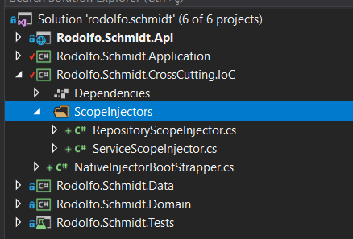
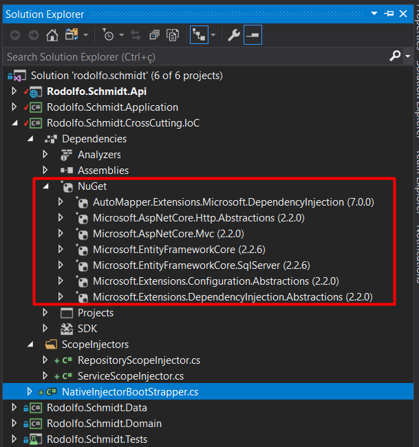
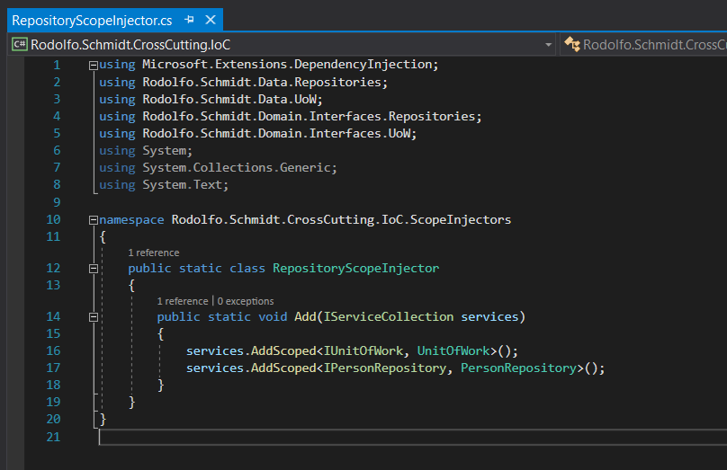
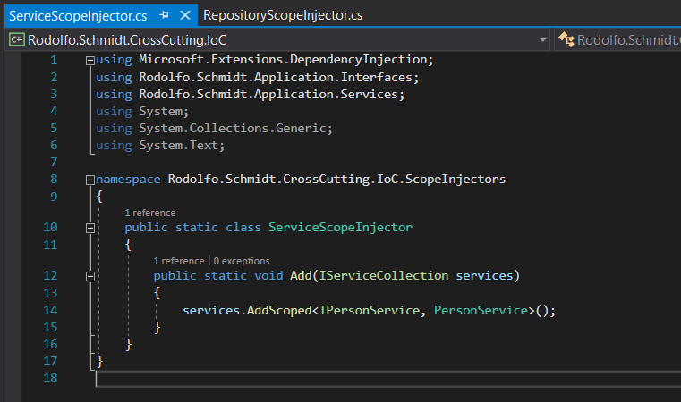

Creating Depedency Injection Layer
In this session we will create the full Injection layer of our api.
Creating directories
Our dependency injection layer is in the design layer we call Cross Cutting IoC which are concepts within the architecture for scalability so let's not go into the level of detail here in this activity and remembering again that here we are giving an architectural tip that you can and should adapt to your needs and interests. Here's a file called NativeInjectorBootStrapper.cs that will be responsible for dependency injection and a directory called scopeInjectors with the files RepositoryScopeInjector and ServiceScopeInjectors.

Creating the Files
As seen in previous sessions it is necessary to install some dependencies which we will use for our dependency injection as listed below.

Now in the files responsible for injecting the scope of the application our services and repositories we will implement as below
using Microsoft.Extensions.DependencyInjection;
using Rodolfo.Schmidt.Data.Repositories;
using Rodolfo.Schmidt.Data.UoW;
using Rodolfo.Schmidt.Domain.Interfaces.Repositories;
using Rodolfo.Schmidt.Domain.Interfaces.UoW;
using System;
using System.Collections.Generic;
using System.Text;
namespace Rodolfo.Schmidt.CrossCutting.IoC.ScopeInjectors
{
public static class RepositoryScopeInjector
{
public static void Add(IServiceCollection services)
{
services.AddScoped<IUnitOfWork, UnitOfWork>();
services.AddScoped<IPersonRepository, PersonRepository>();
}
}
}

using Microsoft.Extensions.DependencyInjection;
using Rodolfo.Schmidt.Application.Interfaces;
using Rodolfo.Schmidt.Application.Services;
using System;
using System.Collections.Generic;
using System.Text;
namespace Rodolfo.Schmidt.CrossCutting.IoC.ScopeInjectors
{
public static class ServiceScopeInjector
{
public static void Add(IServiceCollection services)
{
services.AddScoped<IPersonService, PersonService>();
}
}
}

And finally in the class responsible for injecting the dependencies we will inject our services, repositories, mappers, database connection among other important dependencies for the operation of our api as below. Using the Injection Layer Did You Understand in the Api Layer Session here
using Microsoft.AspNetCore.Mvc;
using Microsoft.Extensions.Configuration;
using Microsoft.Extensions.DependencyInjection;
using Microsoft.AspNetCore.Builder;
using Microsoft.AspNetCore.Hosting;
using System;
using System.Collections.Generic;
using System.Text;
using Rodolfo.Schmidt.Data.Context;
using AutoMapper;
using Rodolfo.Schmidt.Application.Mapping;
using Microsoft.EntityFrameworkCore;
using Rodolfo.Schmidt.CrossCutting.IoC.ScopeInjectors;
namespace Rodolfo.Schmidt.CrossCutting.IoC
{
public class NativeInjectorBootStrapper
{
public static IConfiguration Configuration { get; set; }
// This method gets called by the runtime. Use this method to add services to the container.
public void ConfigureServices(IServiceCollection services)
{
services.AddDbContext<RodolfoSchmidtDbContext>(options => options.UseSqlServer(Configuration.GetConnectionString("Default")));
RepositoryScopeInjector.Add(services);
ServiceScopeInjector.Add(services);
services.AddCors(o => o.AddPolicy("Cors", builder =>
{
builder.AllowAnyOrigin()
.AllowAnyMethod()
.AllowAnyHeader();
}));
services.AddAutoMapper(typeof(MappingProfile));
services.AddMvcCore().SetCompatibilityVersion(CompatibilityVersion.Version_2_2)
.AddAuthorization()
.AddJsonFormatters()
.AddApiExplorer();
}
// This method gets called by the runtime. Use this method to configure the HTTP request pipeline.
public void Configure(IApplicationBuilder app, IHostingEnvironment env)
{
app.UseCors("Cors");
app.UseMvc();
}
}
}